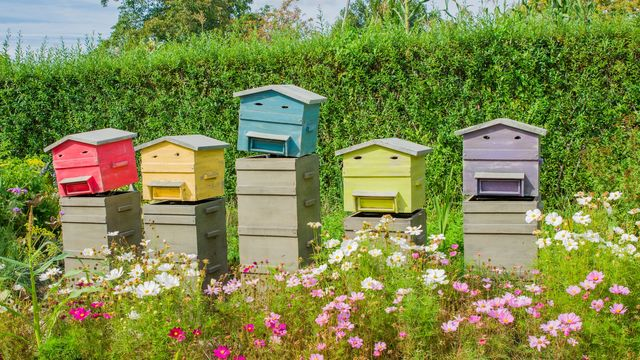

Vous êtes une entreprise:
Grâce à notre système nous vous offrons la possibilité
de rester connecté où que vous soyez à vos ruchers.
Notre système vous permet de consulter en temps réel
l'ensemble des données essentielles qui concernent vos
abeilles. Un véritable outils d'analyse et de gestion
écoresponsable fabriquées à partir de matériaux
recyclée. Issu de matière première durable vous offrant
une résistance aux intempéries.
Vous pouvez nous contacter via notre page contact
Vous êtes un particulier:
Vous désirez nous rejoindre et utiliser notre technologie Française ! APIculture vous propose un modèle unique de ruche connectée.

Toutes les 30 minutes votre balance envoie des
informations de poids, de température et d’humidité
extérieures via le réseau. Toutes ces données sont
ensuite consultables sur une plateforme dont vous
retrouverez toutes les fonctionnalités sur votre
smartphone ou sur votre boitier.
Grâce à cet outil vous garderez toujours un œil sur vos
ruches, vous pourrez ainsi détecter le début des
miellés, suivre le rythme de production, de consommation
ou encore des essaimages.
Vous pouvez nous contacter via notre page contact